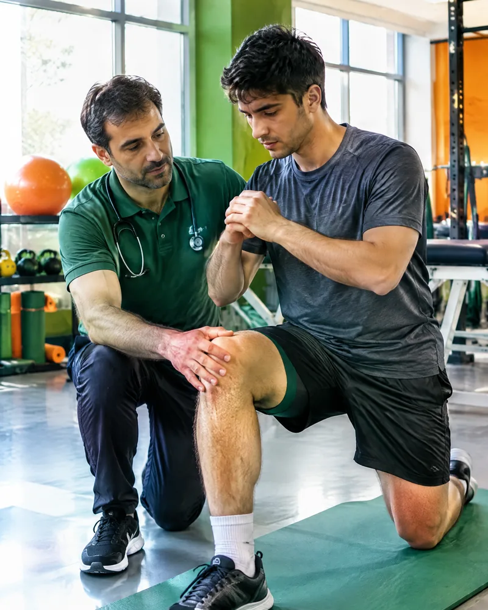
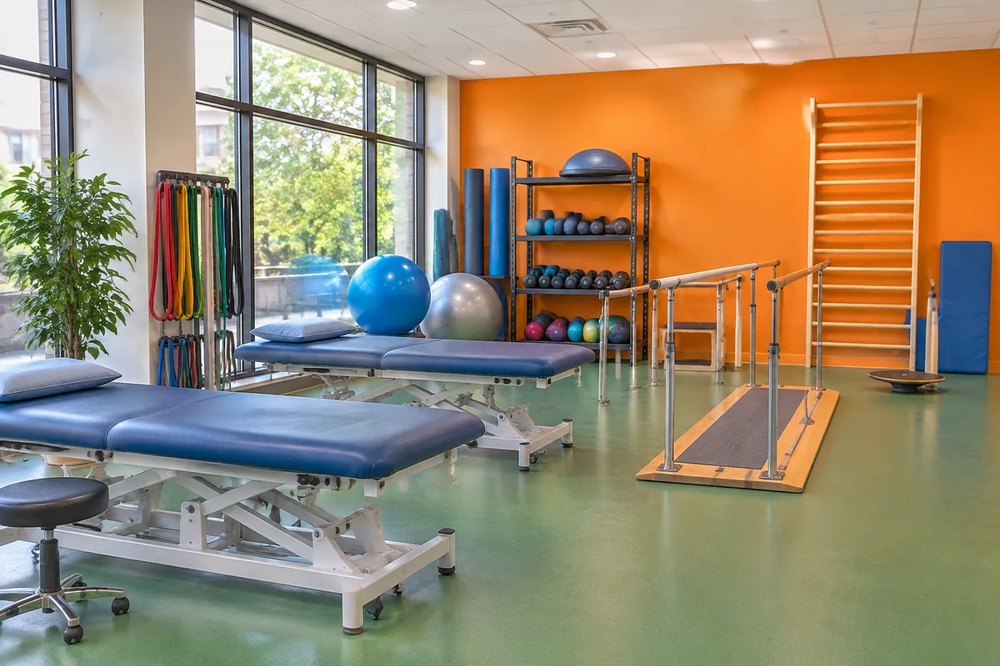

آسیبهای ورزشی
رباط صلیبی، مینیسک و پیچخوردگی.
درمان آسیبهای ورزشی، زانودرد و کمردرد؛ پزشک ارتوپد و فیزیوتراپ در یک مرکز. هدف ما این است که دوباره سراغ ورزش و کارهایی که دوست دارید بروید.


دکتر سینا مرادی پزشک تیمهای ورزشی بوده و تا جایی که بشود، درمان را بدون جراحی شروع میکند. فیزیوتراپیستها در همین مرکز کنار پزشک کار میکنند.
رباط صلیبی، مینیسک و پیچخوردگی.
تمرین درمانی، الکتروتراپی و شاکویو.
دیسک کمر و گردن، تنگی کانال نخاع و دردهای طولانی.
جراحی بستهی زانو و شانه با دوربین.
برای التهاب تاندون و آرتروز (ساییدگی) خفیف.
بررسی نحوهی راه رفتن، صافی کف پا و قوز پشت.
روی جایی که درد دارد بزنید تا علتهای رایج و راههای درمانش را ببینید.
گردن، شانه، کمر، مچ دست، زانو یا مچ پا.
از اولین ویزیت تا برگشتن به ورزش، در چهار مرحله.
معاینه، بررسی حرکت مفصل و در صورت نیاز امآرآی.
تعیین هدف درمان و تعداد جلسهها.
جلسههای فیزیوتراپی در مرکز، همراه با ورزش در خانه.
برگشت تدریجی به ورزش، بعد از اطمینان از آمادگی بدن.
روز و ساعت را انتخاب کنید؛ پیامک تأیید برایتان ارسال میشود.
روز
ساعت
ابتدا یک روز را انتخاب کنید.
بیشتر آسیبها با فیزیوتراپی و تمرین بهتر میشوند. جراحی فقط وقتی پیشنهاد میشود که لازم باشد.
بله، فیزیوتراپیستها در کنار پزشک کار میکنند و برنامهی شما را دنبال میکنند.
لباس ورزشی یا گشاد، تا معاینهی جای درد راحت باشد.
بله، عکسها و جوابهای قبلی را حتماً همراه بیاورید.